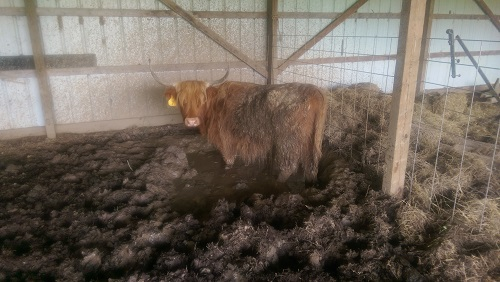
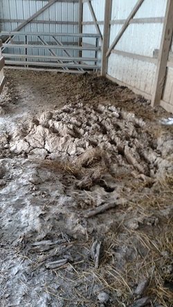

Improving the Cow Barn
Our main barn is about 60x30ft, a great size to store some hay, house a cattle chute (used for catching and treating cattle), and providing plenty of shelter for the herd. However, once we moved in, we discovered that there were a few problems - the biggest of which was the lack of drainage.
The problem
Our barn sits towards the top of a slope on our property, not far from the property boundary (the neigboring land continues to go uphill). The area right around the barn has been graded to move water away from the barn, but for some reason water kept coming under the wall at the back of the barn and pooling on the floor. At the same time, the open-facing side of the barn (that the animals would enter/exit) had no gutter to keep water from running right off and causing erosion on the front side of the barn. Aside from being messy and inconvenient, erosion from the un-guttered side would over time wash away soil; the puddle inside the barn was used by the cows as a cooling bath during the summer and became a foot-deep mud pit.
The solution
The (lack of) gutter on the front side was a relatively quick fix; we picked up some inexpensive plastic guttering and affixed it to the front of the barn. Right now there's no downspout - the water pours out onto a cinderblock - but it's far better than the mud and erosion we had before.
The puddle inside took a bit more work. We discovered that it wasn't the grade of the land causing the problem, but that a section of the gutter on the back side of the barn had become detached from the roof. Water collected in this low-hanging spot, overflowed the gutter, and poured right next to the back wall of the barn - from there leaking inside and adding to the mud puddle.
We purchased some 4" perforated plastic drainage pipe, and hand-dug a trench through the center axis of the barn, cutting right through the mud puddle. We extended the pipe about 15ft on the outside of the downhill side of the barn, so that water would leave through the pipe and safely down a hill. The trench was dug about a foot deep; we lined the bottom with gravel, then laid the pipe, poured in some more gravel, and then filled the trench to level with dirt. Gravel helps protect the pipe from the pressure of cow hooves, while allowing water to easily flow in/out. Surrounding the pipe with dirt would slow infiltration of water into the pipe, and lead to silt and mud buildup in the pipe. The process took about 6 hours of work and about 75ft of pipe, but the problem seems to be fixed.